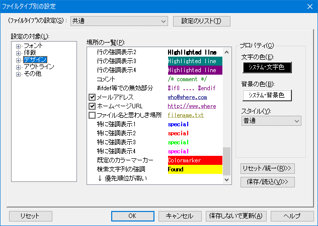
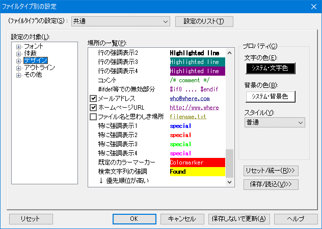

[HME0060A]
●カーソル行を下線で強調表示したい

- カーソルのある行を強調するために、下線を引きたいのですが。

-
「その他」→「ファイルタイプ別の設定」→「デザイン」→「場所の一覧」→「カーソル行」で変更できます。
- [手順]
-
カーソル行を選択すると、プロパティ枠内に、設定が表示されるので、 "下線モード"を選択して下さい。


「その他」→「ファイルタイプ別の設定」→「デザイン」→「場所の一覧」→「カーソル行」で変更できます。
カーソル行を選択すると、プロパティ枠内に、設定が表示されるので、 "下線モード"を選択して下さい。
